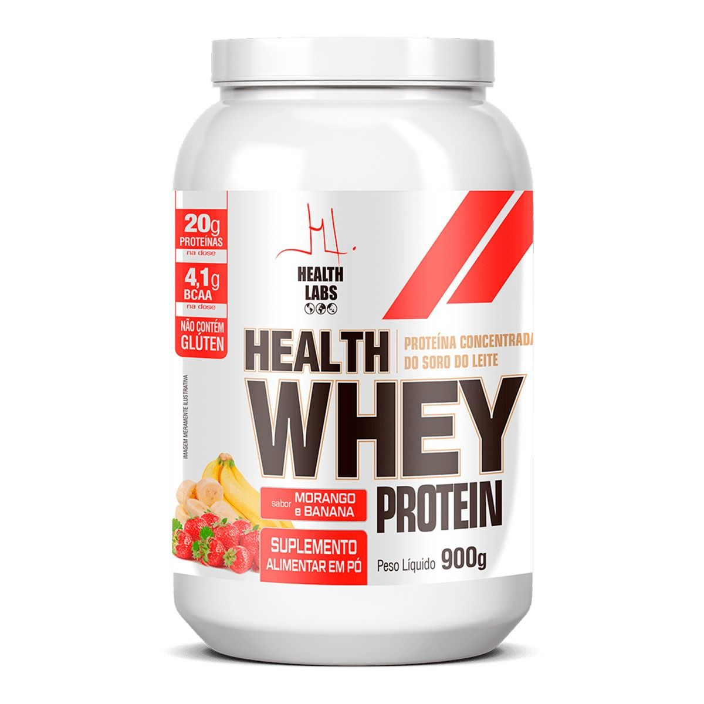
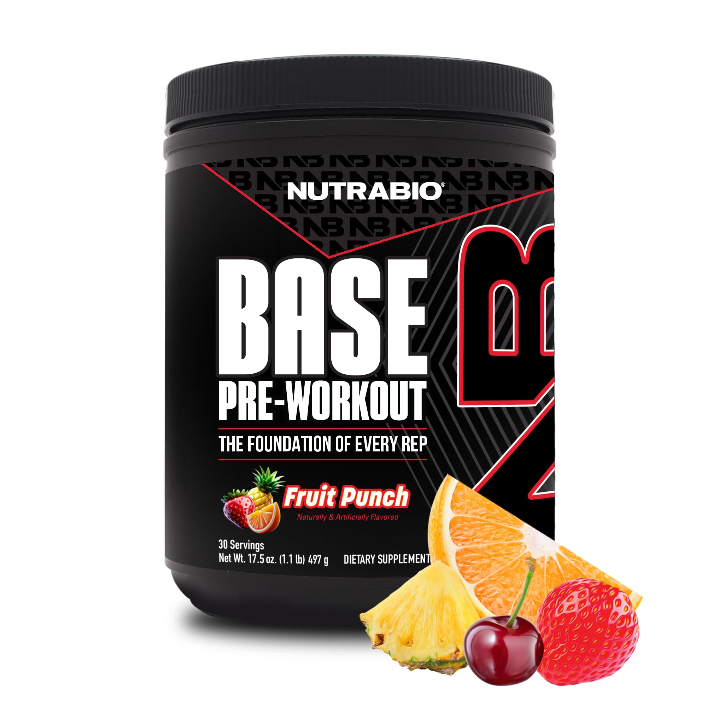
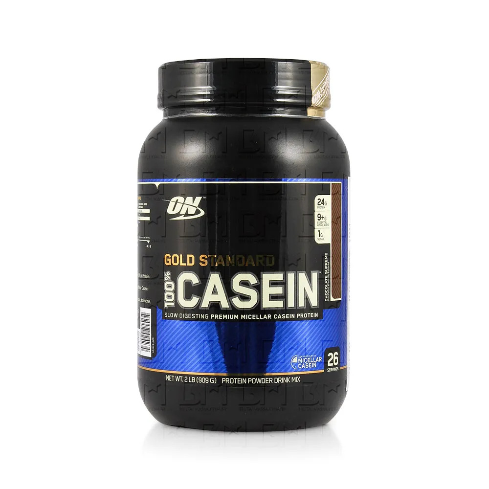

Potencialize seus treinos com a Creatina. O suplemento ideal para aumentar sua força, ganhar massa magra
e melhorar a resistência muscular. 100% pura e em embalagem econômica de 500g para garantir seus resultados
por muito mais tempo.
R$ 80,00
Wey

Acelere sua recuperação e ganho de massa muscular com o Whey. Uma excelente fonte de proteína concentrada
com rápida absorção, ideal para o pós-treino ou para o seu dia a dia. Sabor delicioso de morango e banana.
R$ 95,00
Pré-Treino

Aumente sua energia, foco e rendimento nos treinos com este Pré-Treino. Formulado para dar mais disposição,
força e explosão muscular do início ao fim do seu exercício. Sabor refrescante de ponche de frutas (Fruit Punch).
R$ 180,00
Carboidrato
Garanta energia rápida e máxima hidratação com este Suplemento de Carboidratos. Ideal para tomar antes, durante ou
após treinos intensos, ele ajuda na recuperação energética e repõe os eletrólitos perdidos no suor. Sabor refrescante de laranja.
R$ 140,00
Casien

Garanta o fornecimento prolongado de aminoácidos para os seus músculos com a Caseína. Uma proteína de digestão lenta e gradual,
perfeita para consumir antes de dormir ou durante períodos mais longos sem comer, evitando o catabolismo muscular. Sabor delicioso de chocolate.
R$ 240,00
BCAA
Melhore sua recuperação muscular e reduza a fadiga pós-treino com este BCAA. Composto por aminoácidos de cadeia ramificada na proporção 2:1:1,
ele vem enriquecido com Vitamina B6, que auxilia no metabolismo das proteínas e na produção de energia.